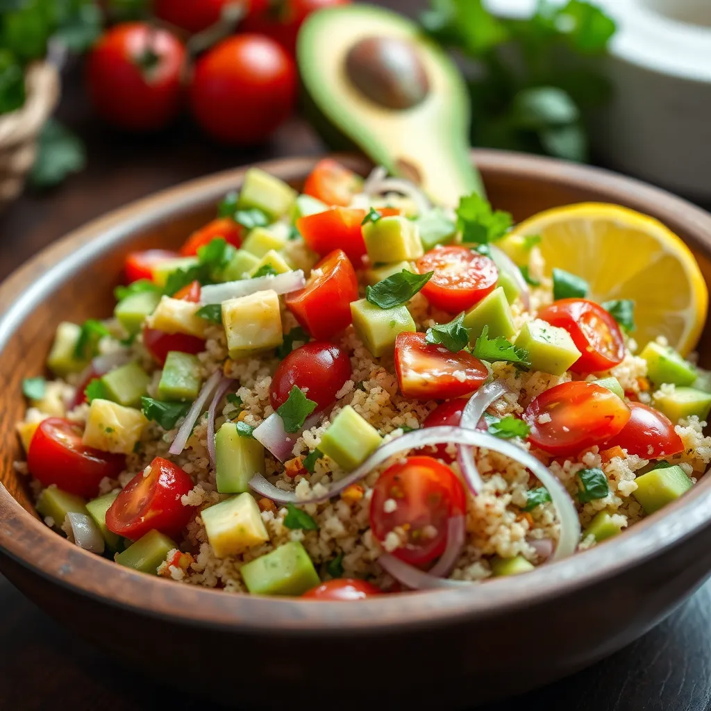

Prepara una deliciosa Ensalada verde de quinoa con aguacate y limón, ideal para un almuerzo facil y nutritivo.

Ingredientes
1 taza de quinoa
2 tazas de agua
1 aguacate maduro, cortado en cubos
2 tazas de espinacas frescas
1 pepino, en rodajas finas
1/4 taza de cilantro fresco picado
1/4 taza de cebolla morada, picada finamente
El jugo de 1 limón
2 cucharadas de aceite de oliva
Sal y pimienta al gusto
Instrucciones
Enjuaga la quinoa bajo agua fría para eliminar el sabor amargo.
Cocina la quinoa en una olla con 2 tazas de agua, llevando a ebullición.
Reduce el fuego y cocina a fuego lento durante 15 minutos, o hasta que el agua se absorba.
Deja enfriar.
En un bowl grande, mezcla la quinoa cocida con las espinacas, pepino, aguacate,
cebolla morada y cilantro fresco.
En un recipiente pequeño, bate el jugo de limón con el aceite de oliva,
sal y pimienta hasta emulsionar.
Vierte el aderezo sobre la ensalada y mezcla suavemente para combinar los ingredientes.
Sirve la ensalada fría y disfruta de una comida saludable y refrescante.
¿Te gustó esta receta?
¡Sigue explorando más recetas deliciosas y comparte tus creaciones con nosotros!